Menü: Bemassung - Gedreht (Linear)
Tastenkürzel: D, L
Kommandos: dimlinear | dimrotated | dl

Beschreibung:
Erstellt eine rotierte (lineare) Bemassung. Rotierte Bemassungen werden oft verwendet um horizontale oder vertikale Masse zu bezeichnen. Sie können aber auch Abstände in beliebigen anderen Winkeln bemassen. Abbildung 39 zeigt die horizontale Version einer linearen Bemassung.
Vorgehensweise: